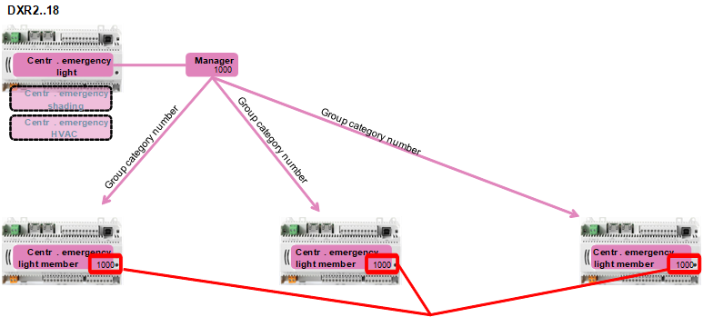

分组
中央函数包含HVAC、照明和着色的中央操作的应用函数。分组用于实现中央控制功能并协调来自整个建筑物、建筑翼楼、楼层等各个房间的需求和强制信号。
构建分组层次结构所需的应用程序模板包含在 ABT 站点库中。中央功能应用程序可在房间自动化站 DXR2.E18.. 和 DXR2.M18.. 上使用。
房间自动化分为几个类别，例如中央气象站（CenWthStn）、中央应急照明（CenEmgLgt）等。
每个类别可能存在一个或多个群组管理员，然后将结果信息转发给所有指定的群组成员（房间）。群组成员通过内部群组号码分配给群组管理员。
同一组类别的组号在同一网络内必须唯一。

使用 ABT 站点，您可以为建筑物构建分组层次结构，并将组成员分配给组经理。
基本程序：
- Structure the building according to your project.
Defining a building structure - Create a grouping hierarchy.
Defining a central functions hierarchy - Add and assign central functions.
Adding a central function - Assign group members to group managers.
Assigning group members to group managers